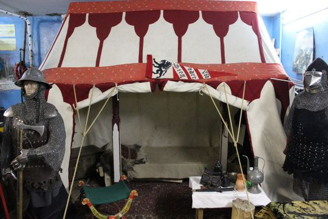

Музей средневекового военного дела

- Режим работы: С 13:00 до 22:00
- Стоимость услуг: взрослый билет - 500 руб., детский - 300 руб.; участие в экскурсии - 250 руб. с человека.
Необходима предварительная запись. - Местоположение: ул. Князя Трубецкого, дом 52, Белгород
Музей средневекового военного дела создан в 2008 году
исследовательским коллективом «Лаборатория «Хранители».
В экспозиции представлены предметы культуры, военного
дела и быта периода Высокого Средневековья (XI–XIV вв.) –
посуда, одежда, около 20 комплектов доспехов и многое другое.
Она создана на основе натурных экспериментов, проводимых лабораторией.

Особенность музея – все предметы можно потрогать,
попробовать в деле, примерить костюмы и сфотографироваться.
Любителей оружия порадует возможность выстрелить из лука или
бросить копье, а детей заинтересуют модели корабля, здания
замка, мельницы, конюшни.
Сотрудники музея не только всё покажут,
но и расскажут обо всех особенностях жизни того периода.
Экскурсии можно заказать по телефону 8-919-282-19-13.